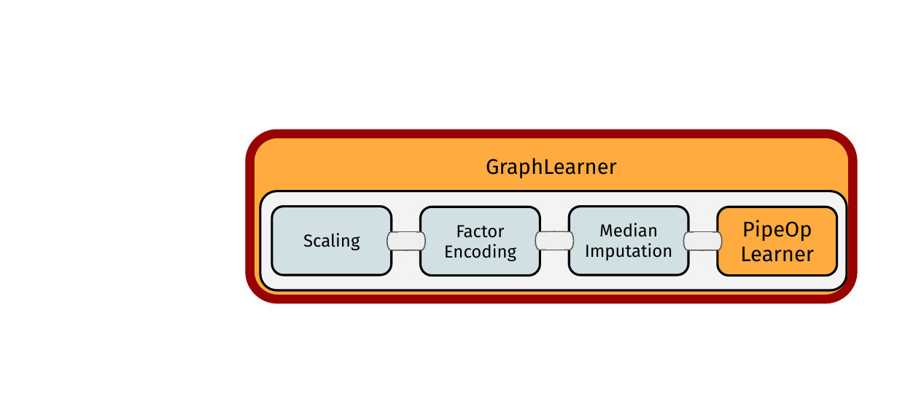
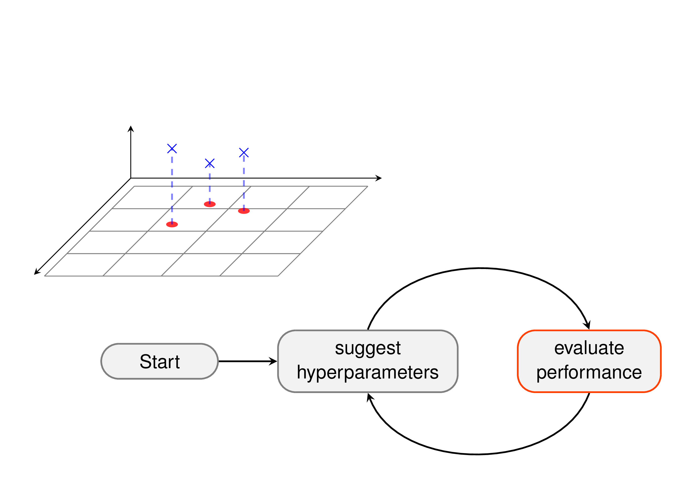
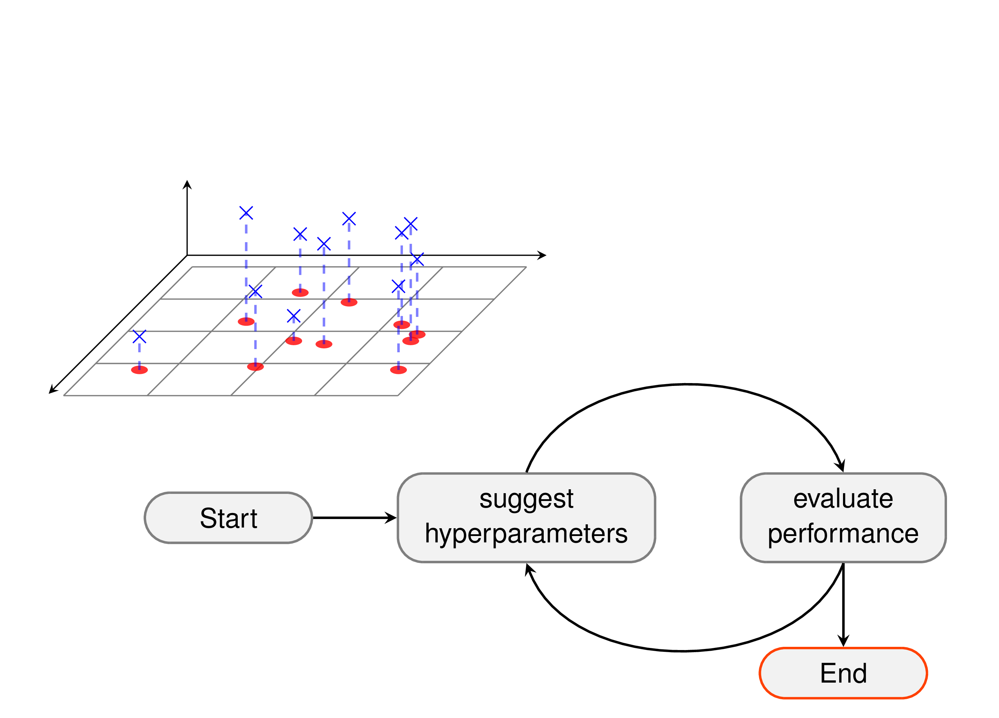

Modern Machine Learning in R
Intro
So you want to do ML in R
Rgives you access to many machine learning methods- … but without a unified interface
- things like performance evaluation are cumbersome
Example:
vs.
So you want to do ML in R
R6
R6 – All you need to know
mlr3 uses the R6 class system. Some things may seem unusual if you see them for the first time.
- Objects are created using
$new().
- Objects have fields that contain information about the object.
- Objects have methods that are called like functions:
- Methods may change (“mutate”) the object (reference semantics)!
R6 and Active Bindings
Some fields of R6-objects may be “Active Bindings”. Internally they are realized as functions that are called whenever the value is set or retrieved.
- Active bindings for read-only fields
- Active bindings for argument checking
mlr3 Philosophy
Overcome limitations of S3 with the help of R6
- Truly object-oriented: data and methods live in the same object
- Make use of inheritance
- Reference semantics
Embrace data.table, both for arguments and internally
Fast operations for tabular data
List columns to arrange complex objects in tabular structure
Be light on dependencies:
R6, data.table, lgr, uuid, mlbench, digest, future, evaluatePlus some of our own packages (
backports,checkmate, . . . )
mlr3 Ecosystem

Data
Data
Tabular data
Features
Target / outcome to predict
- discrete for classification
- continuous for regression
- target determines the machine learning “Task”
species bill_depth bill_length body_mass flipper_length year island.Biscoe
1 Adelie 18.7 39.1 3750 181 2007 0
2 Adelie 17.4 39.5 3800 186 2007 0
3 Adelie 18.0 40.3 3250 195 2007 0
4 Adelie 19.3 36.7 3450 193 2007 0
5 Adelie 20.6 39.3 3650 190 2007 0
6 Adelie 17.8 38.9 3625 181 2007 0
island.Dream island.Torgersen sex.female sex.male
1 0 1 0 1
2 0 1 1 0
3 0 1 1 0
4 0 1 1 0
5 0 1 0 1
6 0 1 1 0task = TaskClassif$new("penguins", penguins, "species")
# or
task = as_task_classif(penguins, target = "species", id = "penguins")
task<TaskClassif:penguins> (333 x 11)
* Target: species
* Properties: multiclass
* Features (10):
- dbl (7): bill_depth, bill_length, island.Biscoe, island.Dream,
island.Torgersen, sex.female, sex.male
- int (3): body_mass, flipper_length, yearTask API
task$ncol- Get number of columnstask$nrow- Get number of rowstask$feature_names- Get number of columnstask$target_names- Get number of columnstask$head(n = )- Get number of columnstask$truth(row_ids = )- Get number of columnstask$data(rows = , cols = )- Get number of columnstask$select(cols = )- Select specific columnstask$filter(rows = )- Select specific rowstask$cbind(data = )- Cbind coumnstask$rbind(data = )- Rbind columns
Dictionaries
Dictionaries
Ordinary constructors:
TaskClassif$new()/LearnerClassifRpart$new()mlr3offers Short Form Constructors that are less verboseThey access
Dictionaryof objects:
| Object | Dictionary | Short Form | |
|---|---|---|---|
Task |
mlr_tasks |
tsk() |
|
Learner |
mlr_learners |
lrn() |
|
Measure |
mlr_measures |
msr() |
|
Resampling |
mlr_resamplings |
rsmp() |
Dictionaries can get populated by add-on packages (e.g. mlr3learners)
Dictionaries
<DictionaryTask> with 21 stored values
Keys: ames_housing, bike_sharing, boston_housing, breast_cancer,
german_credit, ilpd, iris, kc_housing, moneyball, mtcars, optdigits,
penguins, penguins_simple, pima, ruspini, sonar, spam, titanic,
usarrests, wine, zoo<TaskClassif:penguins> (333 x 11): Simplified Palmer Penguins
* Target: species
* Properties: multiclass
* Features (10):
- dbl (7): bill_depth, bill_length, island.Biscoe, island.Dream,
island.Torgersen, sex.female, sex.male
- int (3): body_mass, flipper_length, yearShort forms and Dictionaries
as.data.table(<DICTIONARY>) creates a data.table with metadata about objects in dictionaries:
mlr_learners_table = as.data.table(mlr_learners)
mlr_learners_table[1:10, c("key", "packages", "predict_types")] key packages predict_types
1: classif.cv_glmnet mlr3,mlr3learners,glmnet response,prob
2: classif.debug mlr3 response,prob
3: classif.featureless mlr3 response,prob
4: classif.glmnet mlr3,mlr3learners,glmnet response,prob
5: classif.kknn mlr3,mlr3learners,kknn response,prob
6: classif.lda mlr3,mlr3learners,MASS response,prob
7: classif.log_reg mlr3,mlr3learners,stats response,prob
8: classif.multinom mlr3,mlr3learners,nnet response,prob
9: classif.naive_bayes mlr3,mlr3learners,e1071 response,prob
10: classif.nnet mlr3,mlr3learners,nnet response,probLearning Algorithms
Learning Algorithms

Learning Algorithms
- Get a Learner provided by
mlr3
- Train the
Learner
- The
$modelis the rpart model: a decision tree
n= 333
node), split, n, loss, yval, (yprob)
* denotes terminal node
1) root 333 187 Adelie (0.438438438 0.204204204 0.357357357)
2) flipper_length< 206.5 208 64 Adelie (0.692307692 0.302884615 0.004807692)
4) bill_length< 43.35 145 5 Adelie (0.965517241 0.034482759 0.000000000) *
5) bill_length>=43.35 63 5 Chinstrap (0.063492063 0.920634921 0.015873016) *
3) flipper_length>=206.5 125 7 Gentoo (0.016000000 0.040000000 0.944000000)
6) bill_depth>=17.65 7 2 Chinstrap (0.285714286 0.714285714 0.000000000) *
7) bill_depth< 17.65 118 0 Gentoo (0.000000000 0.000000000 1.000000000) *Hyperparameters
- Learners have hyperparameters
id class lower upper levels nlevels
1: cp ParamDbl 0 1 Inf
2: keep_model ParamLgl NA NA TRUE,FALSE 2
3: maxcompete ParamInt 0 Inf Inf
4: maxdepth ParamInt 1 30 30
5: maxsurrogate ParamInt 0 Inf Inf
6: minbucket ParamInt 1 Inf Inf
7: minsplit ParamInt 1 Inf Inf
8: surrogatestyle ParamInt 0 1 2
9: usesurrogate ParamInt 0 2 3
10: xval ParamInt 0 Inf Inf- Changing them changes the
Learner’s behavior
- This gives a smaller decision tree
n= 333
node), split, n, loss, yval, (yprob)
* denotes terminal node
1) root 333 187 Adelie (0.438438438 0.204204204 0.357357357)
2) flipper_length< 206.5 208 64 Adelie (0.692307692 0.302884615 0.004807692) *
3) flipper_length>=206.5 125 7 Gentoo (0.016000000 0.040000000 0.944000000) *Prediction
Prediction
Prediction
What exactly is a Prediction object?
- Contains predictions and offers useful access fields / methods
- Use
as.data.table()to extract data
- Active bindings and functions that give further information:
$response, $truth,$confusion. . .
Performance
Performance Evaluation
Performance Evaluation
- Prediction ‘Task’ with known data
species bill_depth bill_length body_mass flipper_length island.Biscoe
1: Gentoo 20 37 4000 281 0
2: Adelie 21 39 3750 270 0
island.Dream island.Torgersen sex.female sex.male year
1: 1 0 1 0 2007
2: 0 1 0 1 2006- Predict again
<PredictionClassif> for 2 observations:
row_ids truth response prob.Gentoo prob.Adelie prob.Chinstrap
1 Gentoo Gentoo 0.944 0.016 0.04
2 Adelie Gentoo 0.944 0.016 0.04- Score the prediction

Resampling
Resampling
Resampling
Resample description: How to split the data
Use the
resample()function for resampling:We get a
ResampleResultobject:

Resample Result
What exactly is a ResampleResult object?
Remember Prediction:
Get a table presentation using
as.data.table():task learner resampling iteration 1: <TaskClassif[51]> <LearnerClassifRpart[38]> <ResamplingCV[20]> 1 2: <TaskClassif[51]> <LearnerClassifRpart[38]> <ResamplingCV[20]> 2 3: <TaskClassif[51]> <LearnerClassifRpart[38]> <ResamplingCV[20]> 3 4: <TaskClassif[51]> <LearnerClassifRpart[38]> <ResamplingCV[20]> 4 5: <TaskClassif[51]> <LearnerClassifRpart[38]> <ResamplingCV[20]> 5 prediction 1: <PredictionClassif[20]> 2: <PredictionClassif[20]> 3: <PredictionClassif[20]> 4: <PredictionClassif[20]> 5: <PredictionClassif[20]>Active bindings and functions that make information easily accessible
Calculate performance:
Get predictions
Resampling
Predictions of individual folds
Score of individual folds
Benchmark
Performance Comparison
Multiple learners on multiple tasks:
Setup the design and run the benchmark:
We get a
BenhmarkResultobject which shows thatknnoutperformsrpart:task_id learner_id classif.ce 1: penguins classif.rpart 0.057078245 2: penguins classif.kknn 0.009000452 3: sonar classif.rpart 0.313008130 4: sonar classif.kknn 0.149012776 5: wine classif.rpart 0.078412698 6: wine classif.kknn 0.039206349
Benchmark Result
A BenchmarkResult is just like a Prediction and ResampleResult:
- Table representation using
as.data.table() - Active bindings and functiouns that make information easily accessible
Benchmark Result
The mlr3viz package contains autoplot() functions for many mlr3 objects

Control of Execution
Parallelization
- runs each resampling iteration as a job
- also allows nested resampling (although not needed here)
Encapsulation
- Spawns a separate R process to train the learner
- Learner may segfault without tearing down the session
- Logs are captured
- Possibility to have a fallback to create predictions
Machine Learning Pipelines in R
mlr3pipelines
Machine Learning Workflows:
- Preprocessing: Feature extraction, feature election, missing data imputation, …
- Ensemble methods: Model averaging, model stacking
mlr3: modular model fitting
\(\Rightarrow\) mlr3pipelines: modular ML workflows
Machine Learning Workflows
What do they look like?
- Buildings block: what is happening? \(\rightarrow\)
PipeOp

- Structure: in what sequence is it happening? \(\rightarrow\)
Graph
\(\Rightarrow\) Graph: PipeOps as nodes with edges (data flow) between them

PipeOps
PipeOp: Single Unit of Data Operation
pip = po("scale")to construct
pip$train(): process data and createpip$state
pip$predict(): process data depending on thepip$state
- Multiple inputs or multiple outputs
PipeOp: Single Unit of Data Operation
species bill_depth bill_length body_mass flipper_length island.Biscoe
1: Adelie 0.7795590 -0.8946955 -0.5676206 -1.4246077 -0.977724
2: Adelie 0.1194043 -0.8215515 -0.5055254 -1.0678666 -0.977724
3: Adelie 0.4240910 -0.6752636 -1.1885721 -0.4257325 -0.977724
island.Dream island.Torgersen sex.female sex.male year
1: -0.7641697 2.463094 -0.9895421 0.9895421 -1.281813
2: -0.7641697 2.463094 1.0075337 -1.0075337 -1.281813
3: -0.7641697 2.463094 1.0075337 -1.0075337 -1.281813$center
bill_depth bill_length body_mass flipper_length
17.1648649 43.9927928 4207.0570571 200.9669670
island.Biscoe island.Dream island.Torgersen sex.female
0.4894895 0.3693694 0.1411411 0.4954955
sex.male year
0.5045045 2008.0420420
$scale
bill_depth bill_length body_mass flipper_length
1.9692355 5.4686683 805.2158019 14.0157653
island.Biscoe island.Dream island.Torgersen sex.female
0.5006418 0.4833604 0.3486910 0.5007321
sex.male year
0.5007321 0.8129439 PipeOp: Single Unit of Data Operation
species bill_depth bill_length body_mass flipper_length island.Biscoe
1: Adelie 0.7795590 -0.8946955 -0.5676206 -1.4246077 -0.977724
2: Adelie 0.1194043 -0.8215515 -0.5055254 -1.0678666 -0.977724
3: Adelie 0.4240910 -0.6752636 -1.1885721 -0.4257325 -0.977724
4: Adelie 1.0842457 -1.3335592 -0.9401915 -0.5684290 -0.977724
5: Adelie 1.7444004 -0.8581235 -0.6918109 -0.7824736 -0.977724
6: Adelie 0.3225288 -0.9312674 -0.7228585 -1.4246077 -0.977724
island.Dream island.Torgersen sex.female sex.male year
1: -0.7641697 2.463094 -0.9895421 0.9895421 -1.281813
2: -0.7641697 2.463094 1.0075337 -1.0075337 -1.281813
3: -0.7641697 2.463094 1.0075337 -1.0075337 -1.281813
4: -0.7641697 2.463094 1.0075337 -1.0075337 -1.281813
5: -0.7641697 2.463094 -0.9895421 0.9895421 -1.281813
6: -0.7641697 2.463094 1.0075337 -1.0075337 -1.281813smalltask = task$clone()
smalltask = smalltask$filter(1:3)
pred = po_scale$predict(list(smalltask))
pred$output$data() species bill_depth bill_length body_mass flipper_length island.Biscoe
1: Adelie 0.7795590 -0.8946955 -0.5676206 -1.4246077 -0.977724
2: Adelie 0.1194043 -0.8215515 -0.5055254 -1.0678666 -0.977724
3: Adelie 0.4240910 -0.6752636 -1.1885721 -0.4257325 -0.977724
island.Dream island.Torgersen sex.female sex.male year
1: -0.7641697 2.463094 -0.9895421 0.9895421 -1.281813
2: -0.7641697 2.463094 1.0075337 -1.0075337 -1.281813
3: -0.7641697 2.463094 1.0075337 -1.0075337 -1.281813PipeOps
[1] "boxcox" "branch" "chunk"
[4] "classbalancing" "classifavg" "classweights"
[7] "colapply" "collapsefactors" "colroles"
[10] "copy" "datefeatures" "encode"
[13] "encodeimpact" "encodelmer" "featureunion"
[16] "filter" "fixfactors" "histbin"
[19] "ica" "imputeconstant" "imputehist"
[22] "imputelearner" "imputemean" "imputemedian"
[25] "imputemode" "imputeoor" "imputesample"
[28] "kernelpca" "learner" "learner_cv"
[31] "missind" "modelmatrix" "multiplicityexply"
[34] "multiplicityimply" "mutate" "nmf"
[37] "nop" "ovrsplit" "ovrunite"
[40] "pca" "proxy" "quantilebin"
[43] "randomprojection" "randomresponse" "regravg"
[46] "removeconstants" "renamecolumns" "replicate"
[49] "scale" "scalemaxabs" "scalerange"
[52] "select" "smote" "spatialsign"
[55] "subsample" "targetinvert" "targetmutate"
[58] "targettrafoscalerange" "textvectorizer" "threshold"
[61] "tunethreshold" "unbranch" "vtreat"
[64] "yeojohnson" PipeOps
- Simple data preprocessing operations (scaling, Box Cox, Yeo Johnson, PCA, ICA)
- Missing value imputation (sampling, mean, median, mode, new level, …)
- Feature selection (by name, by type, using filter methods)
- Categorical data encoding (one-hot, treatment, impact)
- Sampling (subsampling for speed, sampling for class balance)
- Ensemble methods on Predictions (weighted average, possibly learned weights)
- Branching (simultaneous branching, alternative branching)
- Combination of data
- Text processing
- Date processing
- Soon
mlr3torch: building of neural networks as graphs inmlr3torch
Graph Operations
Graph Operations
- The
%>>%operator concatenatesGraphs andPipeOps
- The
gunion()-function unitesGraphs andPipeOps
- The
pipeline_greplicate()-function unites copies ofGraphs andPipeOps
Learners and Graphs
PipeOpLearner
Learneras aPipeOp- Fits a model, output is
Prediction
GraphLearner
Graphas aLearner- All benefits of
mlr3: resampling, tuning, nested resampling, …

Linear Pipelines
Linear Preprocessing Pipeline
Linear Preprocessing Pipeline
train()ing: Data propagates and creates$states


Linear Preprocessing Pipeline
train()ing: Data propagates and creates$statespredict()tion: Data propagates, uses$states
Linear Preprocessing Pipeline
- Setting parameter values:
$param_set:
- Retrieving state:
$state
bill_depth bill_length body_mass flipper_length
1.9692355 5.4686683 805.2158019 14.0157653
island.Biscoe island.Dream island.Torgersen sex.female
0.5006418 0.4833604 0.3486910 0.5007321
sex.male year
0.5007321 0.8129439 - Retrieving intermediate results:
$.result(set debug option before)
species bill_depth bill_length body_mass flipper_length island.Biscoe
1: Adelie 0.7795590 -0.8946955 -0.5676206 -1.4246077 -0.977724
2: Adelie 0.1194043 -0.8215515 -0.5055254 -1.0678666 -0.977724
3: Adelie 0.4240910 -0.6752636 -1.1885721 -0.4257325 -0.977724
island.Dream island.Torgersen sex.female sex.male year
1: -0.7641697 2.463094 -0.9895421 0.9895421 -1.281813
2: -0.7641697 2.463094 1.0075337 -1.0075337 -1.281813
3: -0.7641697 2.463094 1.0075337 -1.0075337 -1.281813Tuning
- Behaviour of most methods depends on hyperparameters
- We want to chose them so our algorithm performs well
- Good hyperparameters are data-dependent
\(\Rightarrow\) We do black box optimization (“Try stuff and see what works”)
Tuning
Tuning
Tuning
Tuning
Tuning
Tuning
Tuning
Tuning
Tuning
Tuning
Tuning
Tuning
Tuning

Tuning
Tuning
Tuning

Tuning
Tuning
Tuning
TODO: Simple example for tuning
AutoTuner
TODO: Explain AutoTuner
Nested Resampling
TODO: Explain Nested Resampling for unbiased performance evaluation
Where to go from here
Resources:
- Read the
mlr3book: https://mlr3book.mlr-org.com/ - Browse our website: https://mlr-org.com/
- Read one of our gallery posts: https://mlr-org.com/gallery.html
- Check us out on GitHub: https://github.com/mlr-org
Get in Touch
- You can email us directly: sebastian.fischer@stat.uni-muenchen.de
- You our publicly available mattermost channel: https://lmmisld-lmu-stats-slds.srv.mwn.de/mlr_invite/
- We are always looking for new contributors!
Machine Learning in R - Berlin R Users Group